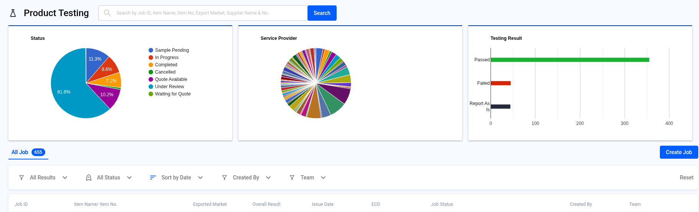
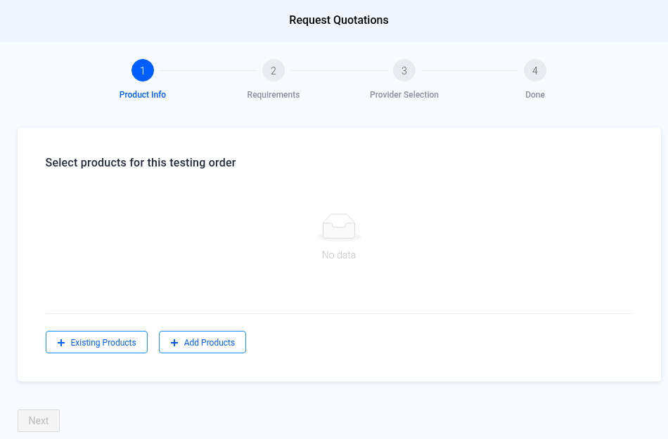
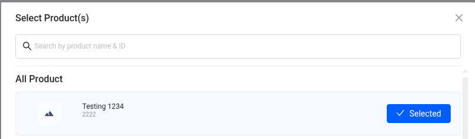
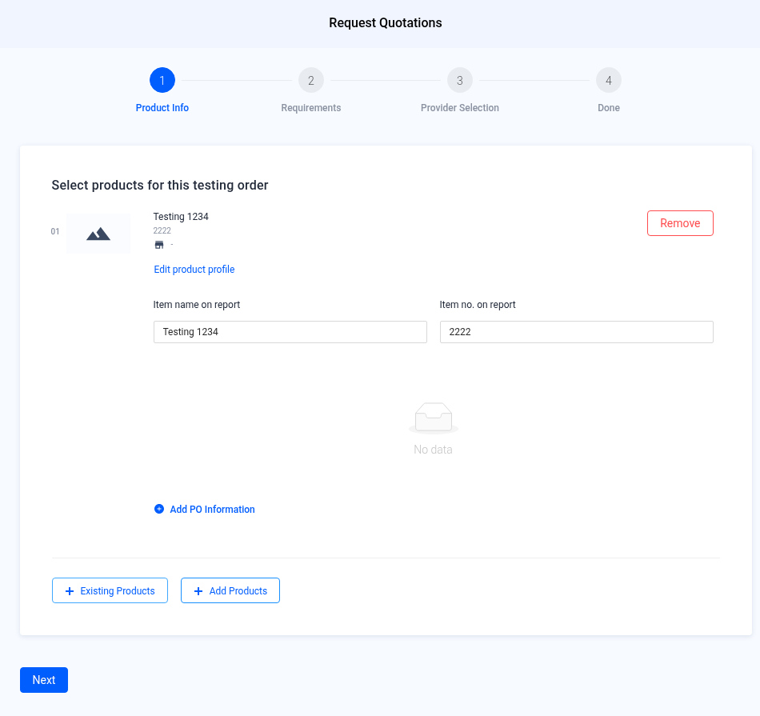
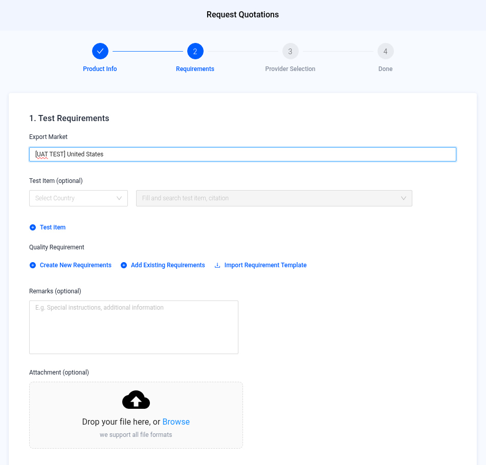
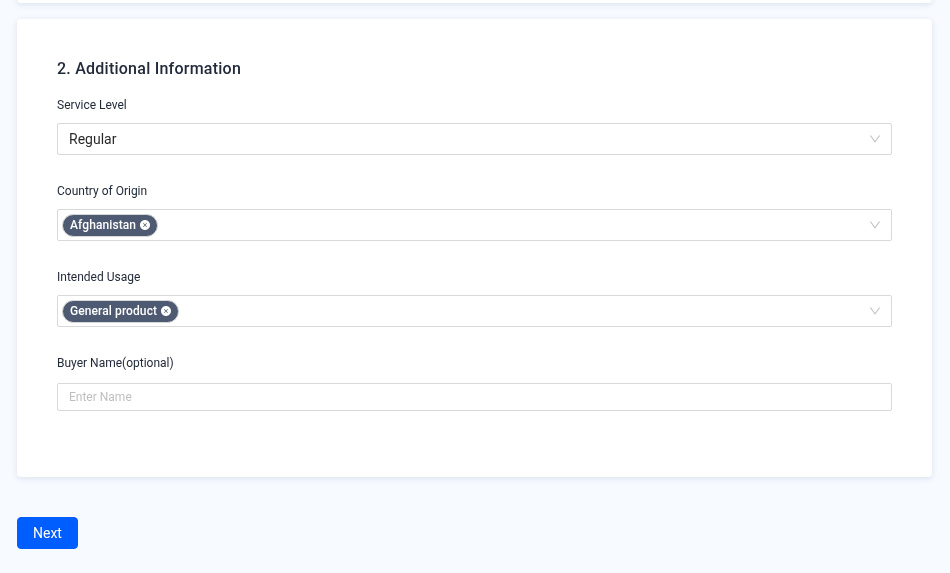
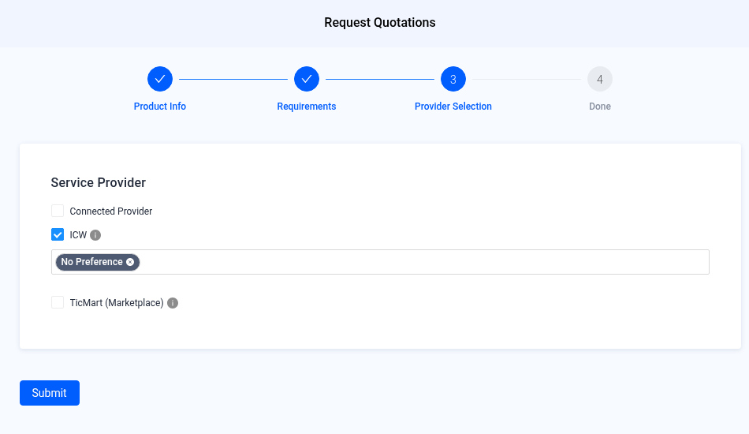
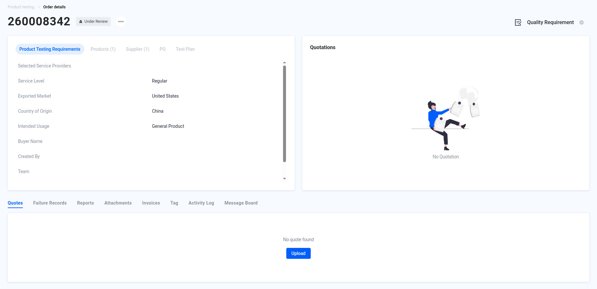
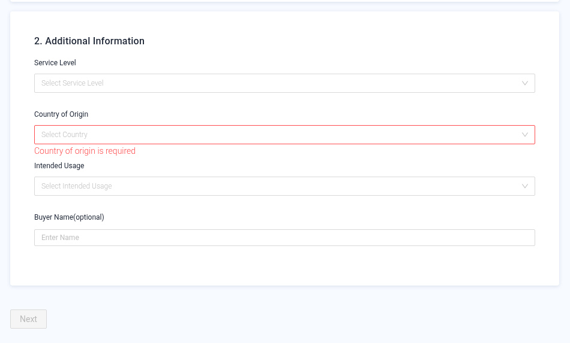

Product Testing — Request a Quotation
Create a product testing job and get a quotation from a laboratory.
Screenshot slots: 9 reviewed replacement images.
Overview
- Open Product Testing and click Create Job.
- Product Info — add an existing product or create a new one.
- Requirements — set the export market, test items, quality requirements and service details.
- Provider Selection — choose Connected Provider, ICW or TicMart, then Submit.
- Done — the Order details page opens. Track the job there or in the Product Testing list.
Step-by-step
1. Open Product Testing
In the left menu, open Product Testing. The page shows charts of job status, service provider and test results, and the list of all jobs. Click Create Job above the list.

2. Product Info — select products
The Request Quotations wizard opens. Add the products for this testing order:
- + Existing Products picks from your Product Management list.
- + Add Products creates a new product here.

In the Select Product(s) pop-up, search by product name or ID, click Select on each product you need, then click Confirm. You can select more than one product.

Check the product details. You can change Item name on report and Item no. on report, which are printed on the test report. Click Add PO Information to link a purchase order (optional). Then click Next.

3. Requirements
1. Test Requirements
- Export Market — where the product will be sold (required).
- Test Item (optional) — choose a country, then search for test items or citations.
- Quality Requirement — Create New Requirements, Add Existing Requirements, or Import Requirement Template.
- Remarks and Attachment (optional) — special instructions and reference files.

2. Additional Information
- Service Level — Regular, Express or Shuttle / Emergency.
- Country of Origin — where the product is made (you can pick more than one).
- Intended Usage — General product, Adult product, Children product or Toys.
- Buyer Name (optional).
When all required fields are filled, Next turns blue. Click it.

4. Provider Selection
Choose who should quote this job. You can tick more than one:
| Option | Use it when |
|---|---|
| Connected Provider | You already work with a lab that is connected to your QMAS account. |
| ICW | You want ICW to find a lab. Pick a preferred lab, or leave “No Preference”. |
| TicMart (Marketplace) | You want quotations from labs in the TicMart marketplace. |

5. Done — track your order
After you click Submit, QMAS shows “Product testing created successfully” and opens the Order details page. Your job has a new order number (for example 260008342) and starts as Under Review.
- Product Testing Requirements, Products, Supplier, PO and Test Plan tabs show what you submitted.
- Quotations on the right shows lab quotes when they arrive.
- The tabs below (Quotes, Failure Records, Reports, Attachments, Invoices, Tag, Activity Log, Message Board) follow the job until the report is ready.

Tips

Help Center additions and remaining gaps
This section adds Help Center material and named gaps. It does not replace the steps above.
How these labels are used
- Source-documented — written in the original Help Center. The last-edited date is given. That does not by itself prove the current QMAS UI.
- Dev-verified — confirmed on qmas-dev.icw.io during guide work.
- Gap — named as missing or too thin. Not current behaviour until checked on dev.
Reviewed screenshots remain 56 of 98. Forty-two inventory slots are still pending. Six supplementary images are not part of the 98. Unreviewed screenshots were not copied.
Source-documented — create path (Help Center updated 2026-11-04)
Source: How To Request Quotation For Product Testing From Global Laboratories, https://app.notion.com/p/a57449507c7c4ceea2ed34a1dbbe9f12. Direct link cited there: https://qmas.icw.io/product-testing/create-job.
The November 2026 create steps already match this page. Help Center step 7 also says you can tick Connected Provider (a lab already linked to the account), ICW (ICW finds a lab; preferred lab or “No Preference”), and/or TicMart (Marketplace), then Submit. This page still only has an ICW screenshot.
Source-documented — post-submit quote flow (older wording; needs verification)
This “receive and confirm” section was not rewritten in November 2026.
- After submission, the job appears on the list with status under review.
- When the quotation is ready, the status changes to Quote Available.
- Open order details. Under Quotations, select a quotation and click Preliminary Accept.
- The Help Center says the designated agency or ICW agency service will then contact you about sample delivery.
- “The price may vary according to the actual sample. Accept the Final Quote to proceed to product testing.”
A 2022 FAQ says cancelling an order is done by contacting customer support via email or online chat. Not re-verified.
Remaining gaps
- Screenshots and current-UI confirmation for Connected Provider and TicMart.
- Job-detail tabs named in the create steps but not walked through: Quotes, Failure Records, Reports, Attachments, Invoices, Tag, Activity Log, Message Board.
- Edit, cancel, reopen, list search, status filters, and charts.
Help Center reconciliation 2026-11-13 (HKT). Original Help Center not edited. This draft is not the public guide at the marconip2026 site. No Dify upload.